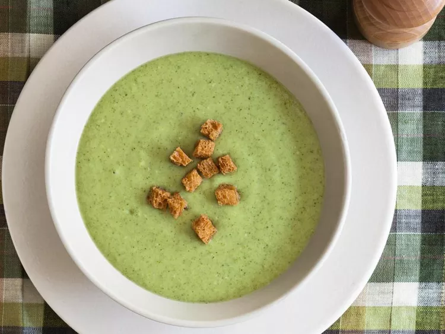

Cream of Broccoli Soup
Description
Make restaurant-worthy cream of broccoli soup in the comfort of your own kitchen with this top-rated recipe. It's thick, flavorful, creamy, and easy to throw together on whim with simple ingredients.
How to Prepare
- Gather all ingredients.
- Melt 2 tablespoons butter in a medium stock pot over medium heat. Saute onion and celery until tender.
- Add broccoli and broth, cover, and simmer for 10 minutes.
- Pour the soup into a blender, filling the pitcher no more than halfway full. Hold down the lid of the blender with a folded kitchen towel, and carefully start the blender, using a few quick pulses to get the soup moving before leaving it on to puree. Puree in batches until smooth and pour into a clean pot. Alternately, you can use an immersion blender and puree the soup right in the cooking pot.
- Melt 3 tablespoons butter in a small saucepan over medium to medium-low heat; stir in flour and add milk. Stir until thick and bubbly, and add to soup. Season with pepper and serve.
- Serve hot and enjoy!
Ingredients
- 5 tablespoons butter, divided
- 1 onion, chopped
- 1 stalk celery, chopped
- 3 cups chicken broth
- 8 cups broccoli florets
- 3 tablespoons all-purpose flour
- 2 cups milk
- Ground black pepper to taste
Image and description taken from Allrecipes.com